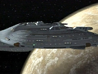
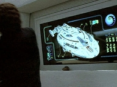
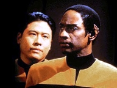
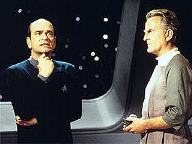
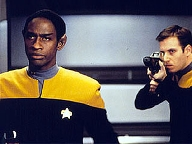
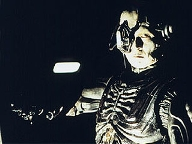

| MANCHETE
DO EPISÓDIO
Voyager
muda a História de um planeta
Episódio
anterior | Próximo episódio Sinopse:
Data Estelar: Desconhecida  A
USS Voyager e sua tripulação são destaque em um museu Kyrian, cerca de 700
anos no futuro. São responsabilizados por uma terrível guerra civil que quase
eliminou a raça. Embora as simulações holográficas sejam imprecisas, os
oficiais também são mostrados como pessoas violentas que não hesitavam em
destruir o que ou quem se pusesse em seu caminho para o Quadrante Alfa. Em certo
trecho da narrativa, Janeway supostamente extermina milhões de indivíduos
inocentes em troca de informações sobre uma fenda espacial.
O curador do museu, Quarren, trabalha na simulação da
Engenharia para acessar um bloco de dados contido num dispositivo recentemente
descoberto em ruínas Kyrians. Quando percebe que se trata de um holograma, ele
ativa o programa do Doutor e explica o que houve. O médico a princípio se
recusa a aceitar que 700 anos tenham se passado, mas logo vê os artefatos da
Voyager no museu e passa a encarar a realidade.
 Aterrorizado com a recriação dos colegas como seres
frios e assassinos, ele tenta desesperadamente descrever a versão da Voyager
para a história. Diz que os Kyrians atacaram a nave sem provocação, pouco
depois de Janeway ter negociado um acordo de comércio com os Vaskans. Quarren
rejeita a idéia de que seu povo foi o agressor. Quando o Doutor descreve como
Janeway e sua tripulação tentaram sair do conflito entre as duas espécies
rivais, seu programa é desligado.
Depois de algum tempo refletindo sobre o que o médico
holográfico disse, Quarren o reativa e permite que
recrie o cenário como o testemunhou. A simulação mostra que Tedran, o líder
dos Kyrians, invadiu a Voyager. Janeway explicou que estava apenas negociando
com os Vaskans, mas o invasor não recuou. Foi o embaixador Vaskan quem o matou.
A última coisa de que o Doutor lembra é das naves Kyrians atacando a Voyager.
Enquanto o médico trabalha para reativar seu tricorder e fornecer provas da
veracidade de sua história, um grupo de Vaskans irritados invade o museu e
começa a destruir as peças em exposição.
 Quando a guerra entre os dois povos ameaça eclodir de
novo, o Doutor acredita que seu programa deve ser apagado. Embora quisesse
limpar o nome da Voyager, ele percebe que não vale a pena causar mais disputas
entre as duas espécies. Anos mais tarde, ao assistir a outra simulação,
visitantes podem ver o Doutor fornecendo a Quarren seu testemunho. O conflito
finalmente era recriado com precisão. A harmonia entre as duas partes estava
restaurada. Uma curadora do museu explica que depois de corrigir os dados, o
médico holográfico partiu em uma nave auxiliar em direção ao Quadrante Alfa.
Comentários:
"Living Witness" é um caso à parte em
Voyager. Traz uma abordagem inteiramente nova para a série. E esse
"laboratório" dá certo. Não apenas pelo formato inovador, mas pela
profundidade de sua mensagem. Poucas vezes um roteiro prendeu tanto a atenção.
Não que seja perfeito, mas consegue entreter e reunir elementos inteligentes. A
história se passa 700 anos no futuro, em um planeta povoado por duas raças: os
Kyrians e os Vaskans. O personagem central é um Kyrian chamado Quarren, que
trabalha em um museu sobre a "nave de guerra" Voyager.
 Nas simulações holográficas da exposiçõe, a tripulação
é retratada como vilã em uma trama política. Segundo Quarren, a Voyager
atacou um planeta Kyrian e destruiu suas cidades, abrindo caminho para os Vaskans
vencerem uma guerra de repercussões que ainda se fazem sentir, séculos depois.
Janeway é irracional, vingativa e assassina. Chakotay,
violento. E daí para pior. Nos corredores, vê-se Kazons,
Talaxianos e até zangões Borgs - raças assimiladas pela capitã para servir
de tropa. As cenas, a princípio, chegam a ser divertidas para o telespectador, por
causa dos absurdos e excessos.
Mas quando se torna claro o revisionismo histórico, "Living
Witness" diz a que realmente vem. O twist da história acontece
quando se descobre um novo artefato em ruínas antigas, com dados ativos que
podem revelar uma versão completamente diferente dos eventos do passado. A
peça nada mais é do que um backup do programa do Doutor. Quando o
holograma é reativado e descobre que o envolvimento da tripulação na
História Kyrian foi drasticamente deturpado, passa a fornecer dados mais
precisos a Quarren. É claro que se suscita um conflito. A noção de verdade é
contrastante entre os dois. O pesquisador inicialmente enfrenta dificuldades em
aceitar as novas informações; precisa negá-las a si próprio. E o
telespectador consegue entender muito bem por quê.
 Neste ponto, o segmento traça paralelos com a nossa
própria história, sejam as pessoais ou universais. Ninguém abandona
facilmente suas crenças, ou fatos em que baseia toda a sua existência. Mesmo
que as evidências e as respostas estejam ao alcance dos olhos, a auto-censura
de mediato fala mais alto. É quase como uma defesa. No caso de Quarren, um
único achado arqueológico abala toda a estrutura da História de seu povo. Ele
pessoalmente carrega nas costas o peso de repensar tudo em que acredita e, ao
mesmo tempo, a responsabilidade de transmitir as descobertas a todos os outros.
É muito parecido com o que passou Gegen em "Distant
Origin", da terceira temporada. Segmentos assim, que provocam o
fã, são pontos altos Voyager. É uma pena que não sejam tão
recorrentes.
A reação dos "fanáticos", que destróem o
museu, também é transferível à nossa realidade. Já aconteceu e ainda
acontece. Isso faz com que o roteiro seja verossímil e o drama legítimo.
Também é muito válida a resolução do episódio. Quarren e o Doutor, com o
passar de mais alguns séculos, são vistos como heróis que lançaram uma nova
era de luz e paz. A resposta não vem de imediato. Eles não colhem o fruto de
sua coragem. Mas, as novas gerações, sim.
 Talvez o único furo na história seja essa idéia de um backup
do Doutor. É claro, não poderiam usar o médico original, ou então a série
desandava. Mas em diversas ocasiões foi claramente dito que o programa dele era
complexo demais para ser copiado e impossível de ser substituído. Vale lembrar
o recentíssimo "Message in a Bottle"
e o drama de Paris ao constatar que poderia vir a se tornar médico em tempo
integral, caso o Doutor se perdesse. Agora, aprende-se que não apenas existia
esse backup, como ele foi coincidentemente roubado na batalha dos
Kyrians. Quais as chances disso? É seguro dizer: ínfimas. Mas são problemas
recorrentes no Quadrante Delta de Voyager. Dentro dessa nova
possibilidade súbita, pode-se inferir que novos backups existirão, certo?
Errado. Infelizmente, a premissa voltará a ser reescrita no futuro, quando a
nave enfrentar novas situações em que o Doutor correrá o risco de se perder e
não haverá o benefício de uma cópia.
Total falta de credibilidade...
Mas, de uma forma geral, "Living
Witness" é uma gostosa surpresa. Seus méritos destacam-se sobre as
falhas no roteiro. Certamente,e stá entre os melhores segmentos da temporada
e da série.
Citações:
Doutor - "What's going to happen to me
now? Will you put me on display? The holographic Rip van Winkle?"
("O que acontecerá comigo agora? Você vai me colocar em exibição? O
Rip van Winkle holográfico?")
Doutor - "Somewhere, halfway across the
galaxy I hope, Captain Janeway is spinning in her grave. You've portrayed us
as monsters."
("Em algum lugar, eu espero que do outro lado da galáxia, a capitã
Janeway está rolando em seu túmulo. Você nos retratou como monstros!")
Quarren - "You're lying!"
("Você está mentindo!")
Doutor - "I was there."
("Eu estava lá!")
Quarren - "You're trying to protect yourself."
("Está tentando se proteger.")
Doutor - "And so are you. From the truth. Isn't it a coincidence that
the Kyrians are being portrayed in the best possible light? Martyrs, heroes,
saviours. Obviously, events have been reinterpreted to make your people feel
better about themselves. Revisionist history. It's such a comfort."
("Você também. Da verdade. Não é uma coincidência que os Kyrians são
retratados na melhor luz possível? Mártires, heróis, salvadores.
Obviamente, os eventos foram reinterpretados para fazer o seu povo se sentir
melhor consigo mesmo. História revisionista. Que conforto!")
Quarren - "Try to understand my point
of view. All my life, I thought I knew the truth. There was never any doubt."
("Tente entender o meu ponto de vista. Toda a minha vida eu pensei que
sabia da verdade. Nunca houve dúvidas.")
Doutor - "I never meant to throw your beliefs into doubt, but I can't
deny what I know to be true."
("Eu nunca pretendi transformar suas crenças em dúvidas, mas não posso
negar o que sei que foi verdade.")
Trivia:
 Tecnicamente, este pode ser considerado o primeiro episódio de Jornada
em que nenhum dos personagens regulares aparece. Todos são simulações
holográficas criadas por Quarren, à exceção do Doutor, que na verdade é um backup
do programa do médico original.
Tecnicamente, este pode ser considerado o primeiro episódio de Jornada
em que nenhum dos personagens regulares aparece. Todos são simulações
holográficas criadas por Quarren, à exceção do Doutor, que na verdade é um backup
do programa do médico original.
O episódio foi dirigido por Tim Russ.
Henry Woronicz interpretou J'Dan, em "The
Drumhead", de A Nova Geração. Em Voyager,
fez Gegen, de "Distant Origin", com uma curiosidade: o
personagem tinha um histórico parecido com o de Quarren.
Rod Arrants participou de A Nova
Geração, como Rex, em "Manhunt".
Craig Richard Nelson fez o inspetor Krag, em
"A Matter of Perspective", de A Nova Geração.
Morgan H. Margolis foi o tripulante Baird, em
"Vanishing Point", de Enterprise. Ficha
técnica: Direção de
Tim Russ
Roteiro de Brannon Braga
Adaptação por Bryan Fuller
Exibido em 29/04/1998
Produção: 091 Elenco: Kate
Mulgrew como Kathryn Janeway
Robert Beltran como
Chakotay
Roxann Biggs-Dawson como B'Elanna Torres
Robert
Duncan McNeill como Tom Paris
Ethan Phillips como
Neelix
Robert Picardo como Doutor
Tim Russ
como Tuvok
Jeri Ryan como Seven of Nine
Garrett Wang como Harry Kim Elenco
convidado:
Henry Woronicz como Quarren
Rod Arrants como Daleth
Craig Richard Nelson como
árbitro Vaskan
Marie Chambers como árbitro
Kyrian
Brian Fitzpatrick como Tedran
Morgan H. Margolis como
visitante Vaskan
Episódio
anterior | Próximo episódio
|